AcFun助手|使用说明
目录导航
新手导航
- 插件安装完成后在浏览器右上角会有一个图标
- 点击图标后会弹出一个设置菜单
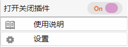
- 点击设置即可进入功能设置选项
功能介绍
主站配置
自动投蕉
对于一些健忘Acer来说，经常看视频后忘记把香蕉投给喜欢的UP主，导致香蕉攒到月底只能腐烂或者蕉易，希望这个功能可以帮到你……喜欢的UP主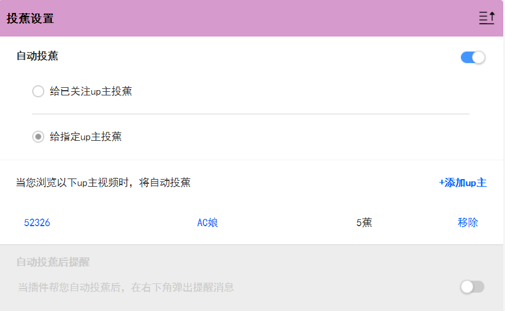
用户标记
UP主标记
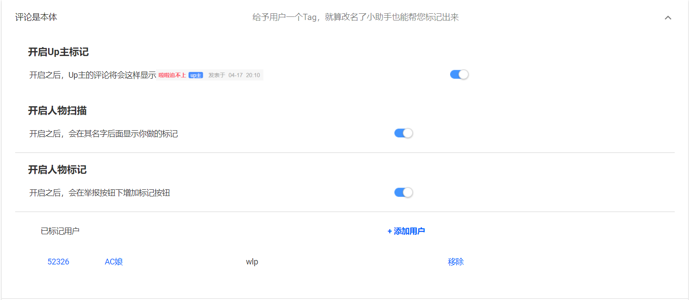对于当前的评论区而言，你很难在评论区一眼认出一个不熟悉的UP主
UP主标记功能可以帮助你在UP主名字后面加上一个标记

人物标记
支持为某一用户设置自定义备注，再也不必担心改名认不出了设置步骤:首先在上方图片所示设置项开启人物扫描与人物标记功能
可以点击下方添加用户，然后输入UID和备注即添加
或者也可以有更便捷的方式
- 点击在评论区评论的右下角，红色方块内的按钮
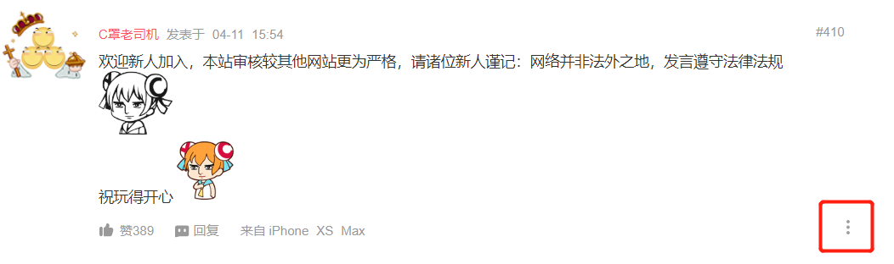 - 点击红框内的标记按钮
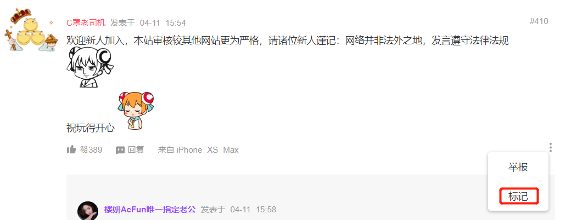 - 在弹出的输入框输入自定义标记内容，点击确定后保存
- 当开启人物扫描给你后，你之前添加的用户标记就可以在用户的名字后面显示，如下图：
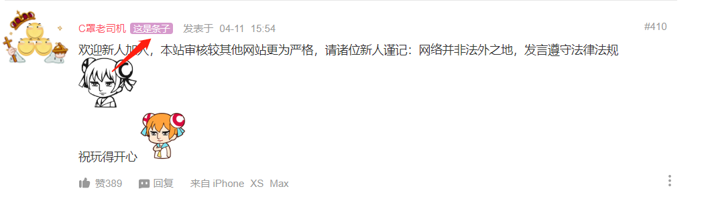
内容设置
内容屏蔽
支持在文章区屏蔽某一UP主的投稿开启功能后，点击添加UP主并输入UID即可
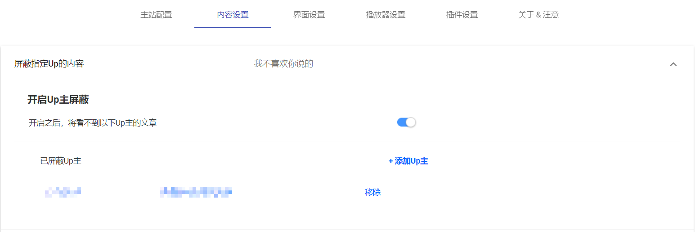
界面设置
界面优化
首页右侧导航栏
开启后，首页右侧会出现导航栏，为你定位首页中的板块位置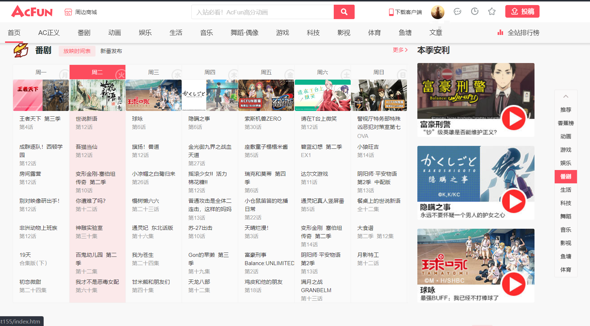
个人中心入口优化
开启后，在网页顶部的个人中心入口处显示你的听众(粉丝)、香蕉、金香蕉、UID等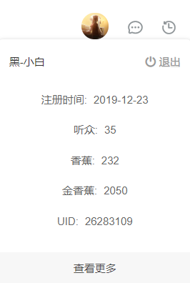
显示点赞数
在目前的网页端视频，还没有点赞功能此选项仅显示视频在APP客户端被点赞的数量
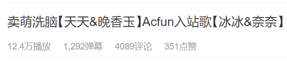
播放器配置
播放器设置
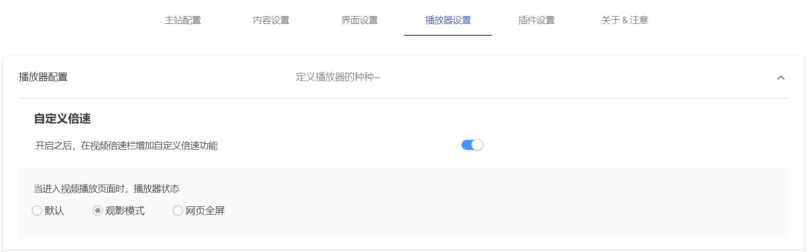自定义倍速
开启后在视频中的倍速新增自定义选项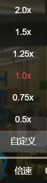
默认播放器状态
在点进一个视频播放页面时，播放器的默认状态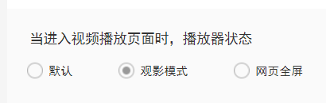